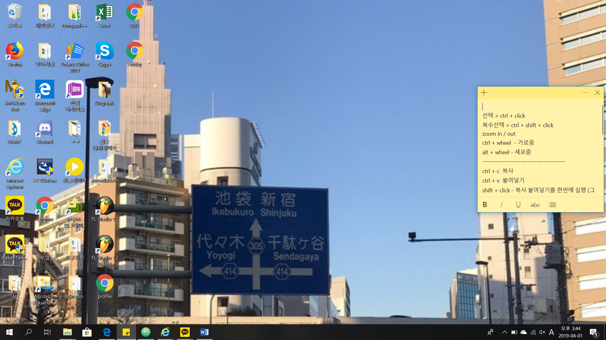

Making music
People usually say that listening to music is their hobby, but I have a new hobby in composing these days.How i make music???
|  |  |
 |
 |
| You will see two unfamiliar icons on the screen. | Yes, these two carrot-shaped icons are my music programs. | When I run the program, the following screen will appear. | This is a song that I'm making these days :-) |
It's not been long since I started working on it, but I uploaded the music files that were incomplete !